The slide of the lecture is on the left, the same figure on the right, computed in the browser from the same data. The ▶ button moves the parameter step by step.
Seasonality in economic data · Seasonal differencing and seasonal unit roots · SARIMA models · Case study: the airline model · Case study: Romanian GDP, not adjusted · Seasonal adjustment in practice · Fourier terms and calendar effects · Multiple seasonality: electricity load · TBATS and Prophet · Forecast evaluation · Forecast combination
Seasonality in economic data
Seasonality in six Romanian series
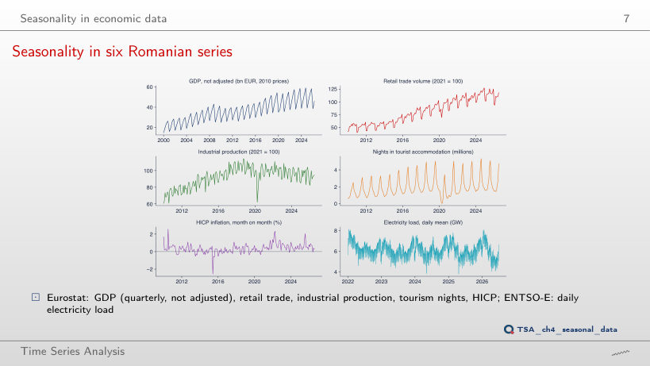
Answer
In January: 0.575% on average, followed by October, 0.487%; the lowest is in June, −0.368% (fresh food). The ranking depends on the period: on 2015–2019 October has 0.575% and May 0.457%. For GDP, the mean of quarter 4 is 57% above the mean of quarter 1 (27.8 and 43.6 bn EUR, 2000–2026); for tourism, August has 3.7 times as many nights as January (2015–2019).
Seasonal plot and subseries plot
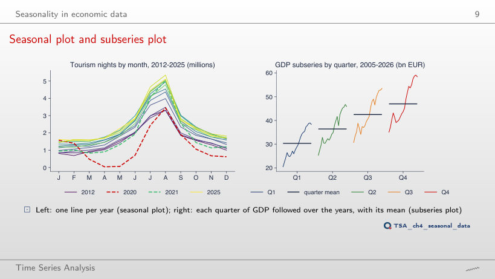
Answer
In 2021: 5.3, against 3.4 in 2019 and 2.2 in 2020. In January 2021 restrictions still kept tourism low, and the summer recovered; in 2020 the summer was hit as well, and April 2020 had only 0.045 million nights. The shape of the year stays the same: August is the peak month in every year. For GDP, the four subseries keep the order Q1 < Q2 < Q3 < Q4 in all 21 years of 2005–2025.
Seasonal differencing and seasonal unit roots
The seasonal difference
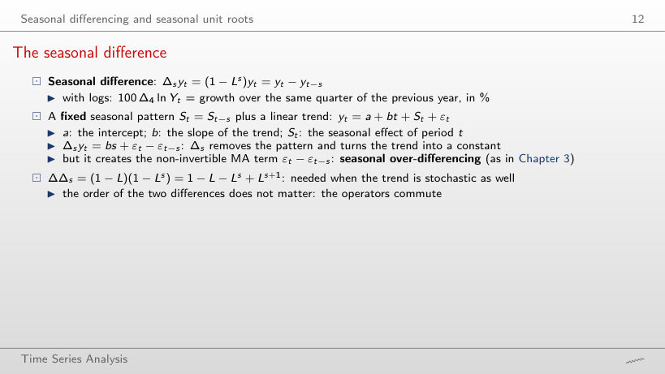
Worked example
Answer
No: 17.9 is the seasonal jump from Q1 to Q2 (the GDP factors NSA/SCA are 0.78 in Q1 and 0.93 in Q2). The comparison with the same quarter removes the season: GDP in 2026Q2, 45.88 bn EUR, is 1.96 log points below 2025Q2, 46.79 bn EUR. ΔΔ₄y = −0.46 shows that the annual fall deepened, from −1.50 in 2026Q1 to −1.96.
The roots of 1 - z^s: seasonal unit roots
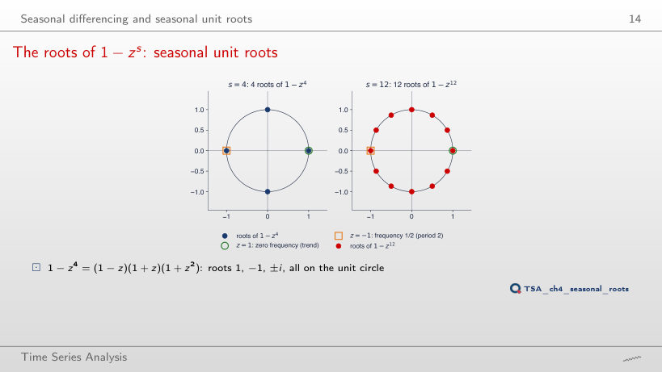
Answer
Only one, z = 1. The root z = −1 (period 2) exists only when s is even; for s = 7 the other six roots form three complex-conjugate pairs, with periods 7, 3.5 and 2.33 days. For s = 4: 1, −1 and ±i; for s = 12: 1, −1 and five pairs.
Interpreting the seasonal roots
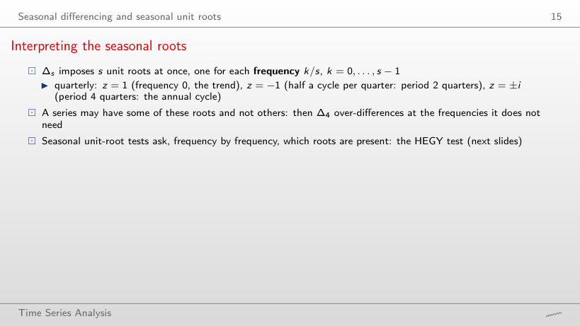
Worked example
Answer
Period 12/1 = 12 months, the annual cycle: z₁ = 0.866 + 0.500i, and the pair (k = 1, k = 11) gives the factor 1 − 1.732z + z². For s = 12 there are 12 roots: two real ones (1 and −1, period 2 months) and five complex-conjugate pairs, with periods 12, 6, 4, 3 and 2.4 months.
Romanian GDP: regular and seasonal differences
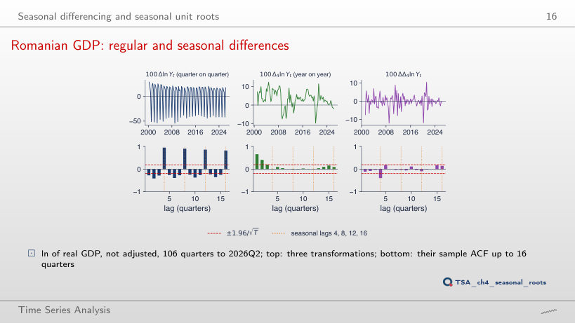
Answer
Yes: −0.34, outside the ±0.23 band (T = 75). The negative value at the seasonal lag does not come from 2020 but from a seasonal pattern that changes slowly: the signature of a seasonal MA. For Δ ln Y the ACF stays at 0.94 at lag 4 on the short sample as well; for Δ₄ ln Y the ACF at lag 1 is 0.68.
The HEGY test
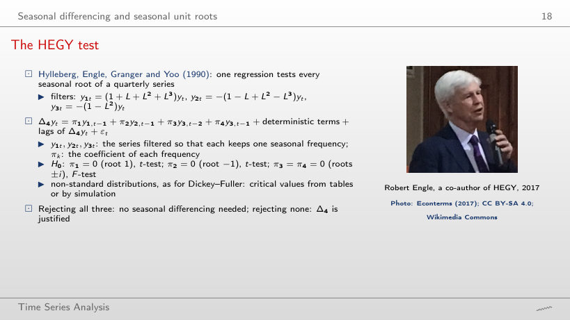
Worked example
Answer
No: with k = 0, t(π₂) = −3.34 < −2.77 and F(π₃, π₄) = 17.25 > 6.64, so the roots −1 and ±i are rejected; only the root 1 remains (t(π₁) = −1.46). With k = 1, chosen by AIC, no null is rejected (−1.97, −2.19, 6.12). The autocorrelation left in the residuals of the regression without lags changes the decision. The sample end matters too: up to 2025Q4, with k = 1, t(π₂) = −2.88 and F = 8.38 reject two nulls.
Seasonal unit-root tests on Romanian data
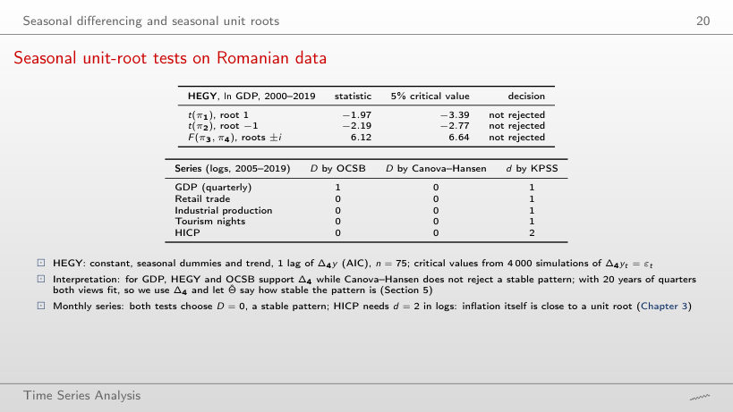
Answer
Not for GDP: OCSB gives D = 1, Canova–Hansen D = 0 and KPSS d = 1 for every end. It changes for tourism nights (OCSB gives D = 1 for 2012 and 2020, and d moves between 0 and 1), for industrial production (D = 1 by OCSB for 2012 and 2014) and for the HICP (d = 1 for 2012, then d = 2). Canova–Hansen rejects stable seasonality for no series and no end.
SARIMA models
Worked example: the airline model
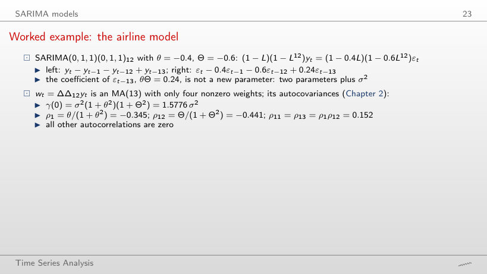
Worked example
Answer
Not exactly: the 1949–1960 estimates, θ̂ = −0.402 and Θ̂ = −0.557, imply ρ₁₁ = ρ₁₃ = 0.147, while the sample ACF of w_t is 0.064 at lag 11 and 0.152 at lag 13. Both values lie inside the band ±0.17, so the test does not separate them from the model value. At lags 1 and 12 the model implies −0.346 and −0.425, and the data give −0.341 and −0.387.
Theoretical ACF and PACF of three seasonal models
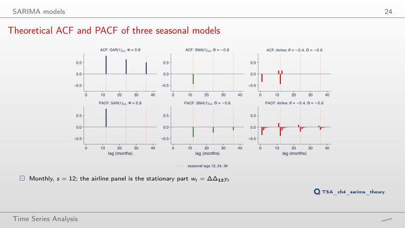
Answer
They change sign: −0.152. The satellites are the product ρ₁ρ₁₂, and ρ₁ = θ/(1 + θ²) goes from −0.345 to 0.345, while ρ₁₂ = −0.441 stays. For SAR(1)₁₂ with Φ = 0.8 the ACF decays 0.8, 0.64, 0.512 at lags 12, 24, 36; for SMA(1)₁₂ with Θ = −0.6 the PACF is −0.242 at lag 24.
Forecasting with SARIMA
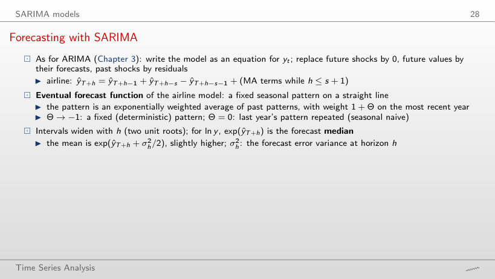
Worked example
Answer
+0.0220 in logs, about 2.2%: the forecast is 348.6 thousand, against 341.0 without the MA terms; the actual value was 360. The MA terms use residuals up to lag 13 at most, so from h = 14 they are 0 and the forecast repeats the pattern on the line (February 1960: 354.6 against 391 actual).
Case study: the airline model
Identification of the airline model
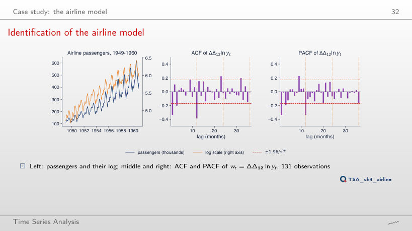
Answer
Positive autocorrelations that decay slowly: 0.71 at lag 1, 0.48 at lag 3, still 0.19 at lag 8. The trend is not removed, and the series stays non-stationary. With ΔΔ₁₂ ln y, non-zero values remain at lags 1 (−0.34) and 12 (−0.39); lags 3, 9, 23 and 32 also leave the ±0.17 band. The PACF is −0.341, −0.013 and −0.193 at lags 1, 2 and 3: the value at lag 2 is practically zero.
Airline model: forecasts out of sample
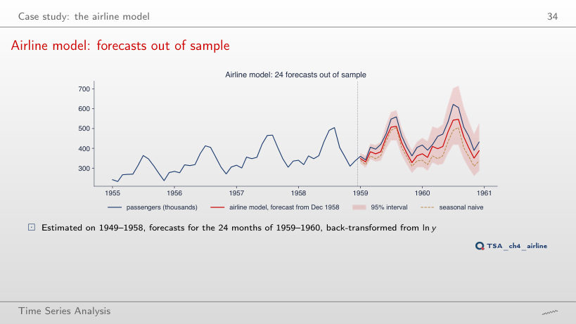
Answer
Much larger: 852 (the interval [201, 1053]), because the two unit roots make the forecast-error variance grow with the horizon. The actual value, 432, stays inside the interval from every origin. From 1958: forecast 388, interval [286, 526], MAPE 8.5% against 15.5% for the seasonal naive method.
Interpreting the airline forecasts
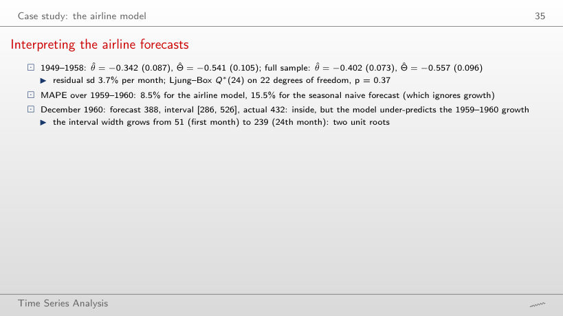
Answer
No: for 1949–1958, p = 0.71; p = 0.37 is the test on the full sample, 1949–1960. The estimates depend on the sample length: on 1949–1952, Θ̂ = −0.904 with SE 3.39 (almost unidentified); on 1949–1958, Θ̂ = −0.541 with SE 0.105. With the origin in December 1952, the MAPE to December 1960 is 16.8% for the airline model and 38.2% for the seasonal naive method.
Case study: Romanian GDP, not adjusted
SARIMA models for Romanian GDP
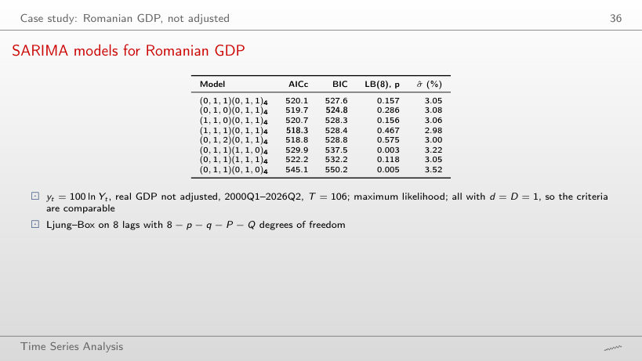
Worked example
Answer
The three without a seasonal MA fail: (0,1,1)(1,1,0)₄ with p = 0.003, (1,1,0)(1,1,0)₄ with p = 0.004 and (0,1,1)(0,1,0)₄ with p = 0.005. The BIC model, (0,1,0)(0,1,1)₄, has p = 0.286 with m = 8 and p = 0.526 with m = 12. AICc differs by only 1.4 between this model and (1,1,1)(0,1,1)₄; BIC penalises the extra parameter more.
Diagnostics of the GDP model
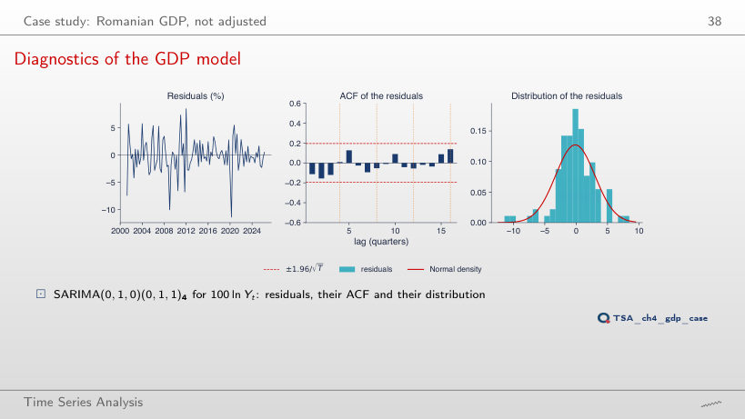
Answer
No: Q*(8) = 19.5 with 6 degrees of freedom, p = 0.003, and the AICc rises to 529.9, against 519.7. For SARIMA(0,1,0)(0,1,1)₄: Q*(8) = 8.55 with 7 degrees of freedom, p = 0.286, and Q*(12) has p = 0.526. In every model the residuals do not follow the Normal distribution: for the BIC model, Jarque–Bera 22.0 and the residual of −11.4% in 2020Q2.
Forecasts of Romanian GDP
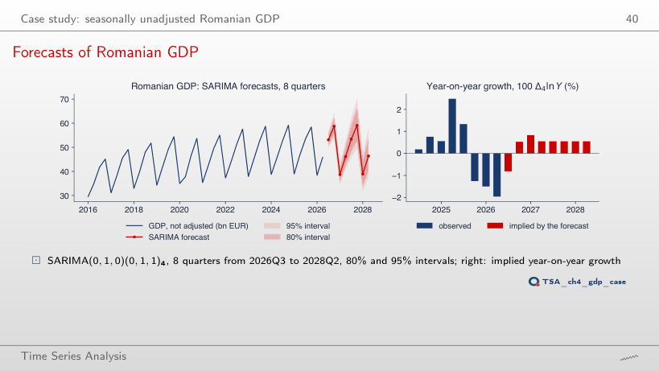
Answer
The same in every quarter: −1.96%, the year-on-year growth of 2026Q2. With Θ = 0 the model is Δ₄y_t = Δ₄y_{t−1} + ε_t, and the forecast repeats the last year-on-year growth. With Θ̂ = −0.577 the pattern gives weight 1 + Θ̂ = 0.42 to the most recent year: implied growth −0.81%, 0.53%, 0.83%, 0.55%, then 0.55%. With Θ = −0.95 the pattern is almost fixed, and the implied growth rises to 3.99%.
Interpreting the GDP forecasts
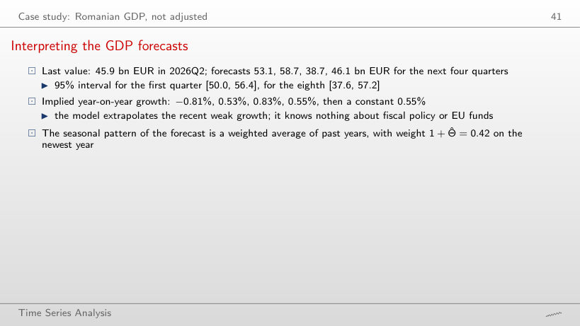
Answer
The forecasts fall a little: 52.5, 57.3, 37.6 and 45.0 bn EUR, against 53.1, 58.7, 38.7 and 46.1 with Θ = −0.577; the 2028Q2 interval becomes 32.4–60.0, against 37.6–57.2. With Θ = −0.95 (an almost fixed pattern) the interval is 37.3–66.1: the residual standard deviation rises when Θ moves away from the maximum-likelihood estimate.
Seasonal adjustment in practice
Unadjusted and adjusted series
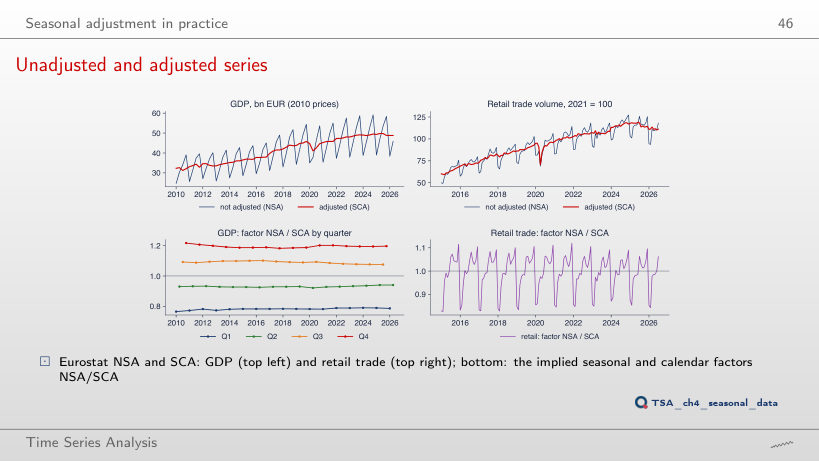
Answer
By −0.06%: practically not at all. The fall of the unadjusted series is the seasonal pattern, with an NSA/SCA factor of 0.786 in Q1 and 1.197 in 2025Q4. Year-on-year growth says the same in both series: −1.50% (NSA) and −1.14% (SCA). The annual totals coincide: 196.4 bn EUR in 2024.
Interpreting the adjusted series
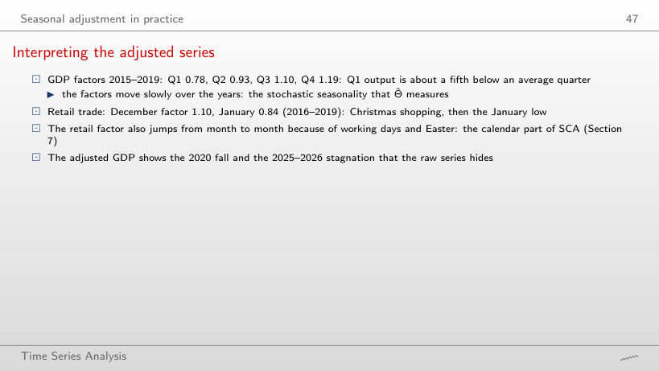
Worked example
Answer
Very little: Q1 0.77 and 0.79, Q2 0.93 and 0.93, Q3 1.09 and 1.08, Q4 1.20 and 1.20. The pattern moves slowly, as Θ̂ = −0.577 indicates. For retail trade, the January factor rises from 0.84 (2015–2019) to 0.86 (2020–2025), and the December one stays at 1.10.
Fourier terms and calendar effects
Seasonal dummies and Fourier terms
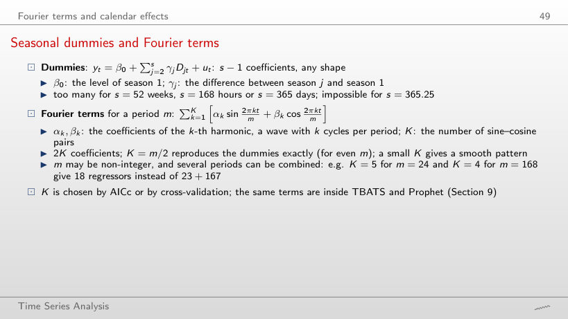
Worked example
Answer
On 1 February 2025: +0.64 GW (644 MW), with all four pairs; the lowest is on 13 May 2025, −0.60 GW. The first pair has an amplitude of 0.499 GW. For tourism, the K = 3 fit gives 0.765 for August, against the observed effect of 0.847.
Fourier approximation of a seasonal pattern
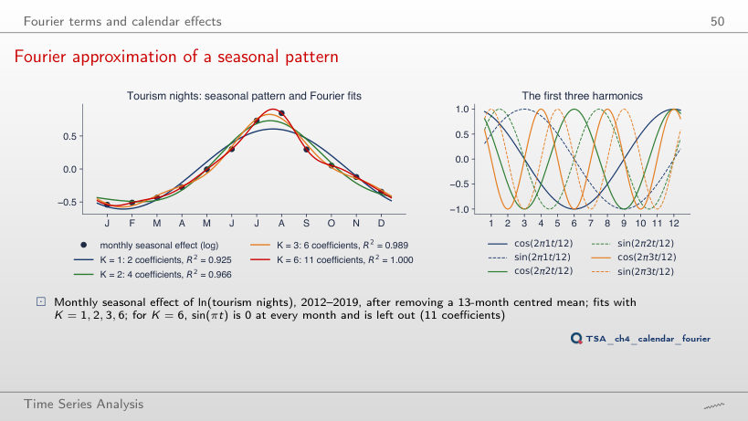
Answer
Three: K = 3, six coefficients, R² = 0.989. K = 1 gives 0.925, K = 2 gives 0.966. For K = 6, sin(2π6t/12) is zero in every month: the fit in the chart has 10 effective coefficients and R² = 0.999; with cos(2π6t/12), the 11 coefficients pass through all 12 points (R² = 1), like 11 dummy variables.
Interpreting the Fourier fits
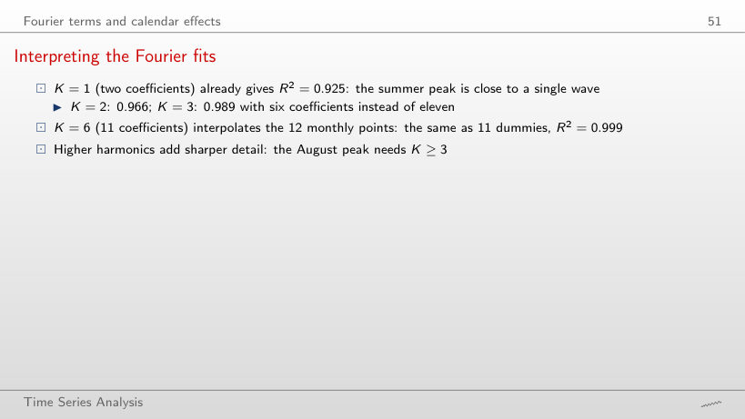
Answer
K = 1 (AICc −41.5, against −40.1 at K = 2 and −32.0 at K = 3), although R² rises from 0.925 to 0.989 and the August peak needs K ≥ 3. With only 12 points the correction 2k(k + 1)/(12 − k − 1) grows fast: 28 at K = 3; at K = 5 and K = 6 AICc is no longer defined. The slide's “K = 6” fit, with R² = 0.999, is the K = 5 fit; with the full K = 6, R² = 1.
Calendar effects and Orthodox Easter
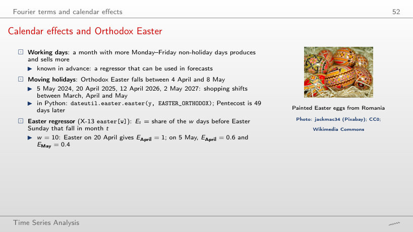
Worked example
Answer
The window runs from 22 April to 1 May: 9 days in April (E = 0.9) and 1 day in May (E = 0.1). With β̂_E = 5.95% for food, the effect is +5.35% in April and +0.59% in May. In 2024 (5 May): 0.6 in April and 0.4 in May; in 2025 (20 April): 1 in April.
Easter and Romanian retail trade
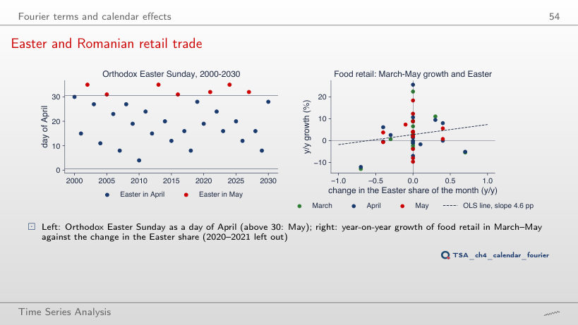
Answer
It falls to 1.6% (standard error 1.6, t = 1.0) and is no longer separated from noise. With w = 10 (lecture): 5.9% (2.3; t = 2.6); with w = 12: 6.1% (t = 2.9). Easter shopping spreads over several days; a regressor that is too narrow puts part of it in the wrong month. Working days stay around +0.6% for food and +1.0% for the total, for every w.
Interpreting the Easter effect
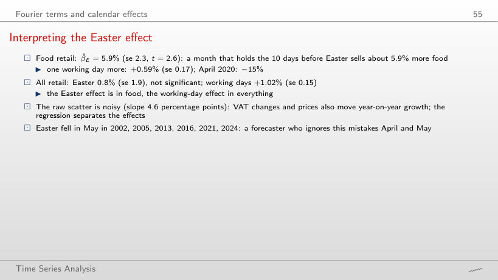
Answer
Yes: with w = 5, β̂_E = 3.0% (SE 1.8, t = 1.7), not significant at 5%; with w = 10, 5.9% (SE 2.3, t = 2.6); with w = 20, 5.4% (SE 1.4, t = 3.8). For all retail the effect stays small (−0.1%, 0.8%, 1.5%), while working days matter at every w (about +1% per day).
Multiple seasonality: electricity load
Hourly load: the day and the week
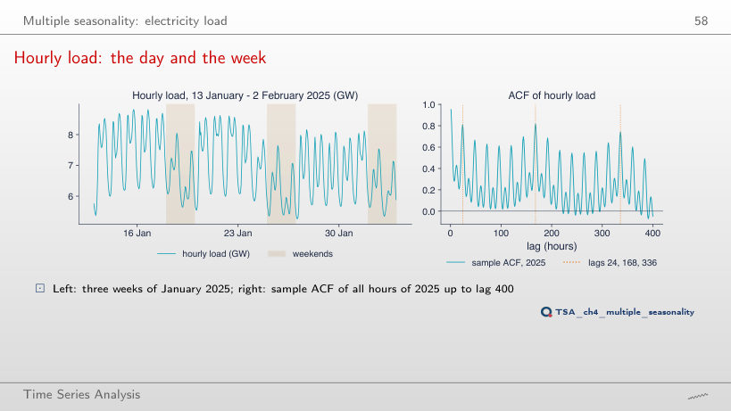
Answer
At lag 168: 0.817 against 0.811. The gap is larger in 2023 (0.841 and 0.800) and 2024 (0.846 and 0.804). At lag 84 (half a week) the ACF is only 0.22. Daily cycle: the minimum at 3:00 (5.3 GW), the maximum at 19:00 (7.3 GW).
MSTL: one seasonal component per period
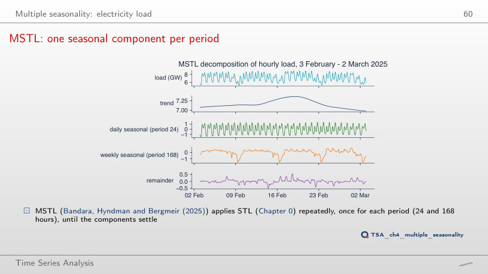
Answer
13%: Easter (20 April) and 1 May follow neither the daily nor the weekly pattern, so they end up in the remainder. In February: 70% the daily component, 29% the weekly one. The share of the weekly component ranges from 20% (August) to 43% (June).
Daily load and public holidays
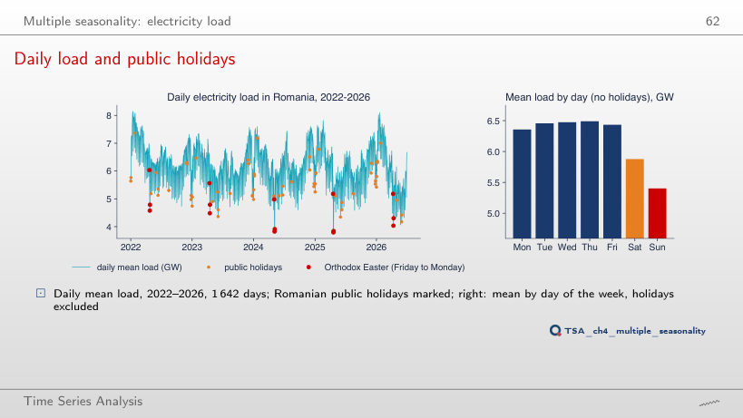
Answer
Pentecost Sunday, 4 June 2023: 4.37 GW, below Easter Sunday, 16 April 2023 (4.48 GW). In 2022, 2024 and 2025 the lowest day is Easter Sunday; over the whole sample, 20 April 2025 (3.79 GW, mean 6.18 GW). Saturday is 9% and Sunday 17% below Wednesday, and January is 25% above May.
A dynamic harmonic regression for daily load
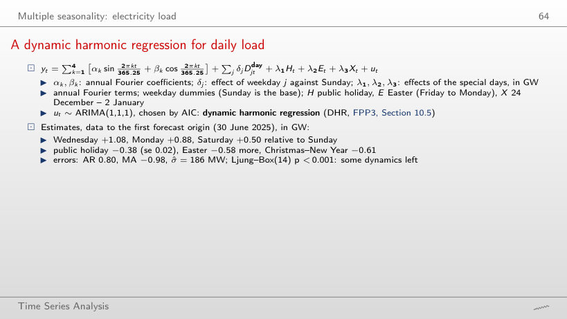
Worked example
Answer
−0.145 GW: the Monday effect, +0.884, plus the annual component, −0.448, plus the Easter dummy, −0.581. An ordinary Monday at the same time of year would have about +0.44 GW. The level of the series comes from the ARIMA(1,1,1) errors, with AR 0.80 and MA −0.98.
TBATS and Prophet
Prophet components for daily load
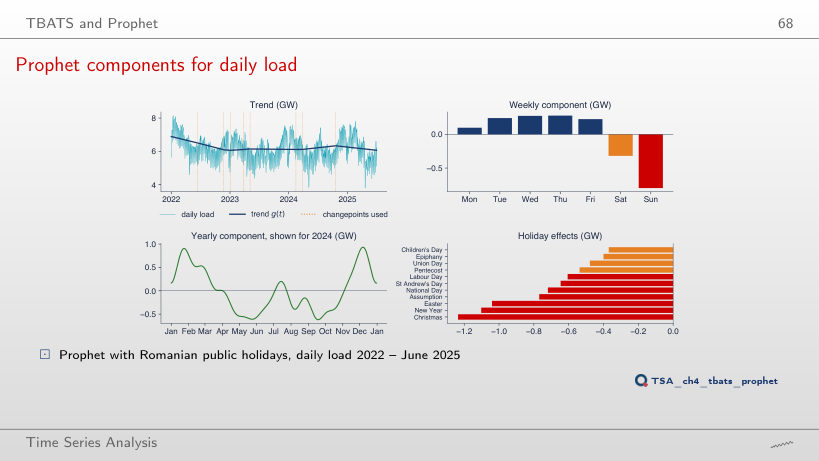
Answer
It rises from 197 to 226 MW. Without holidays, the Christmas and Easter days stay in the residuals and the yearly component is distorted: its maximum moves from 7 December to 24 January 2024. With the holidays, the effects are −1.24 GW (Christmas), −1.10 GW (New Year) and −1.04 GW (Easter).
Forecast evaluation
Time-series cross-validation
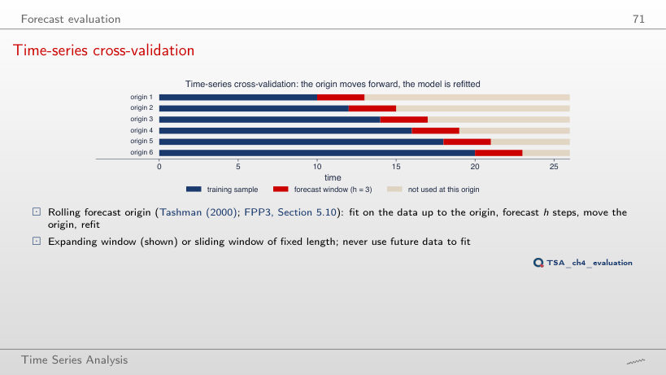
Answer
In three: consecutive windows overlap by h − 1 = 2 periods, so the errors are correlated up to lag h − 1, and the Diebold–Mariano test uses h − 1 autocovariances. In the design of the lecture the origins are 14 days apart and h = 14: the windows do not overlap, so the test has one value per window and h = 1 in the formula.
The Diebold–Mariano test
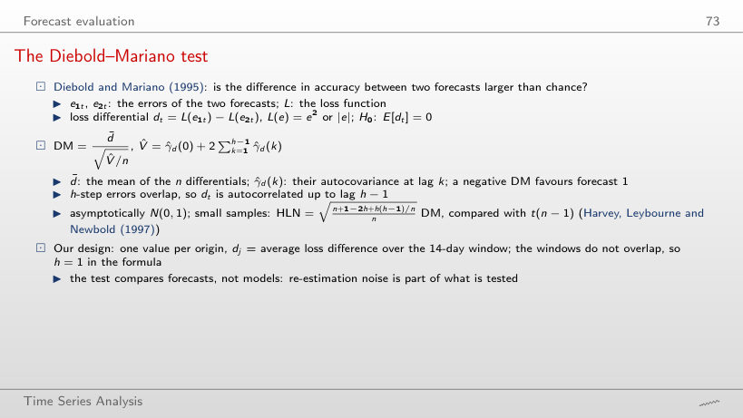
Answer
Only at h = 8 and h = 10–14 (|HLN| > 2.06); not at h = 1–7 and h = 9. A single day per origin is noisier than the 14-day average. DHR against Prophet: rejected at h = 1, 2 and 12–14.
Worked example: a Diebold–Mariano test
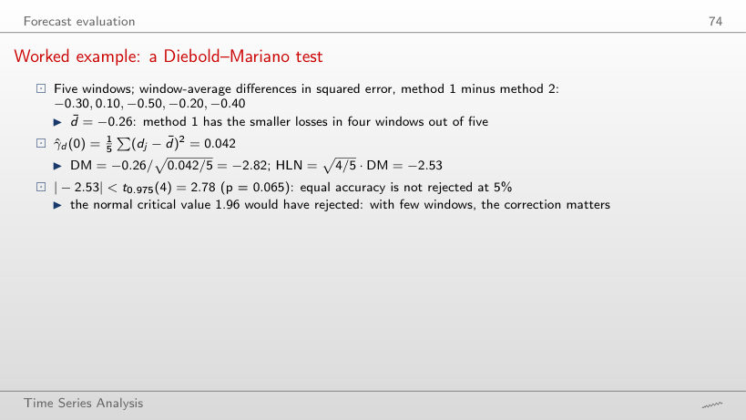
Worked example
Answer
DM = −4.51, HLN = −4.42, p < 0.001; DHR has the smaller loss in 22 of the 26 windows (d̄ = −0.157 GW²). The HLN factor is √(25/26) = 0.981, so it matters little at n = 26; in the five-window example it is √(4/5) = 0.894, and the critical value t(4) = 2.78 instead of 1.96 changes the decision.
Forecasts from one origin, across Easter 2026
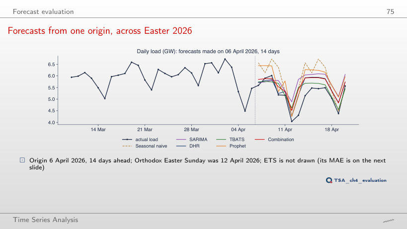
Answer
ETS, with 299 MW, followed by TBATS (309) and DHR (344); the seasonal naive method has 686, Prophet 616. ETS has no line in the chart of the slide, although it has the lowest error in this window. After Easter the load stays below all forecasts, and ETS and TBATS follow the level of the last days.
Cross-validation results for daily load
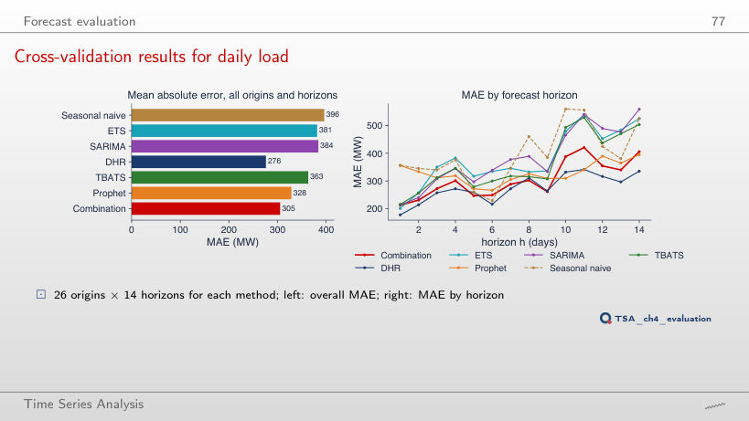
Answer
No: TBATS 317 MW and DHR 318 MW are level, and the DM test does not separate them (HLN 0.83, p = 0.431). In the 18 windows without holidays, DHR has 258 MW, ahead of the combination (290). Over all 26 windows: DHR 276, the combination 305, Prophet 328 MW; ETS, SARIMA and TBATS are not separated from the seasonal naive method (p = 0.431, 0.231, 0.145).
Interpreting the cross-validation results
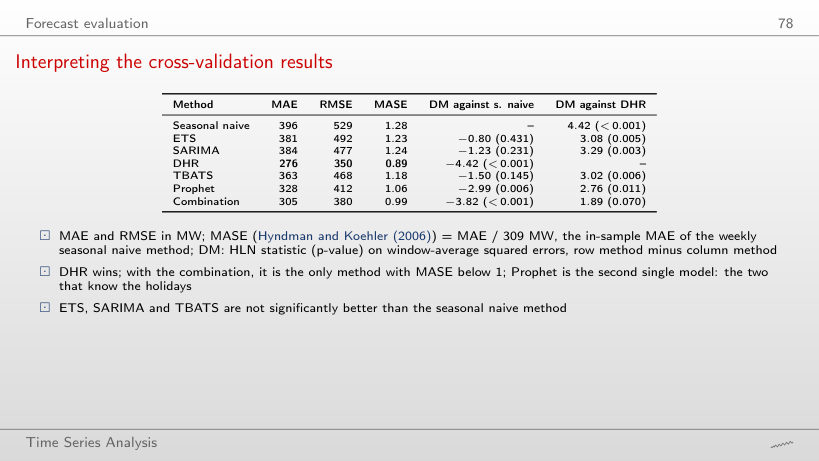
Worked example
Answer
Without holidays (18 windows), DHR has MAE 258 MW and MASE 0.83, and the combination 0.94. In the 8 holiday windows no method has MASE below 1: TBATS 317 MW, DHR 318 MW, the combination 340 MW. Over horizons 8–14 not even DHR has MASE below 1 (1.02).
A second test: Romanian GDP
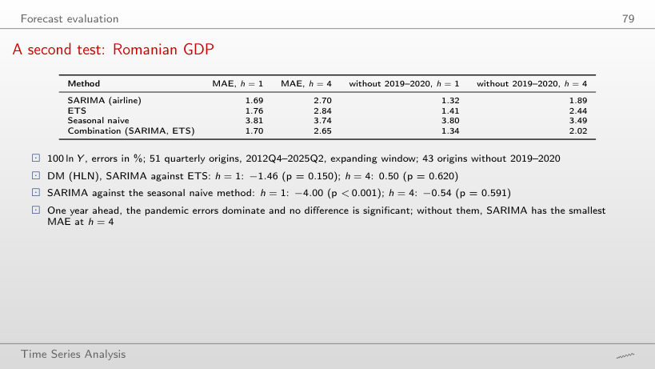
Answer
No: HLN = −1.11 (p = 0.275) at h = 4 and −1.47 (p = 0.148) at h = 1, with 43 origins. With all 51 origins, at h = 4 SARIMA even has MAE 2.70 against 2.84, and HLN = 0.50 (p = 0.620): the squared loss of SARIMA is larger in the pandemic years.
Forecast combination
Why combining forecasts works
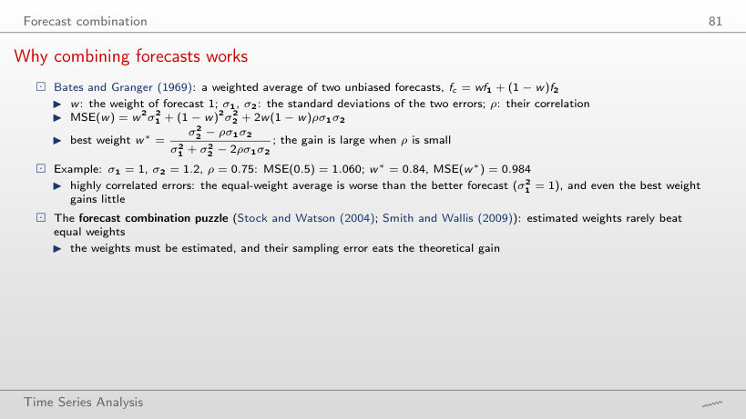
Worked example
Answer
No: σ₁ = 348 MW, σ₂ = 411 MW, ρ = 0.75; the variance of the equal combination is 126,036 MW², above σ₁² = 120,854. The best weight is w* = 0.82 (MSE 118,370), close to DHR alone. In MAE, the equal combination has 283 MW, DHR alone 276. Strongly correlated errors leave little room for a gain, as in the slide example (1.060 against 1).
Combining DHR and Prophet
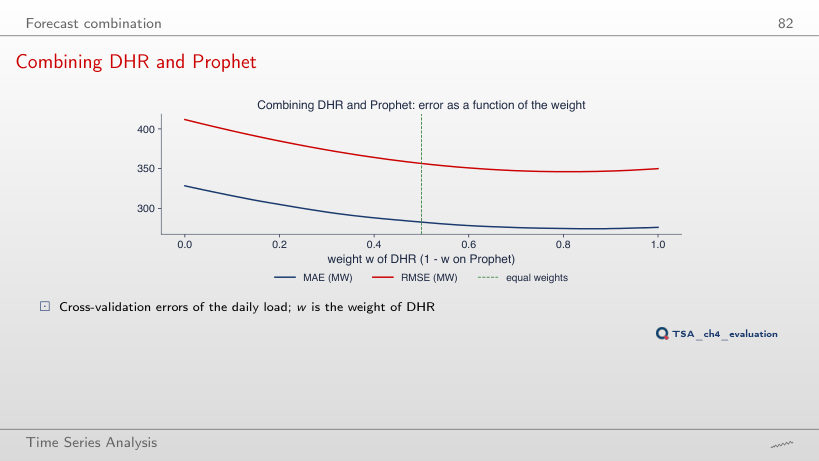
Answer
295 MW: below both components. With weakly correlated errors the mistakes partly offset each other; the best weight in hindsight is w = 0.37 (MAE 286). For DHR and Prophet (ρ = 0.75): 283 MW with equal weights, against 276 for DHR alone; for ETS and TBATS (ρ = 0.98) the equal-weight average (370) is worse than TBATS alone (363).
Interpreting the combination
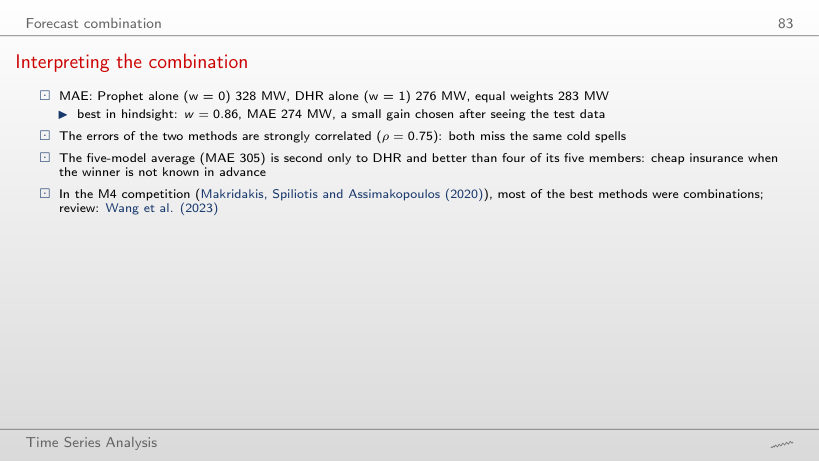
Answer
A little: MAE 299 MW, against 305 with equal weights; weights chosen with hindsight give 296, and DHR alone 276. For DHR and Prophet: 283 with equal weights, 281 from the earlier windows, 274 with the best weight in hindsight (w = 0.86). The gain of estimated weights is small, as the forecast combination puzzle says.
Romanian GDP: Eurostat, chain-linked volumes (2010 prices), not adjusted (NSA) and seasonally and calendar adjusted (SCA), in the version used in the lecture. Retail trade, industrial production and tourism nights: Eurostat, up to July 2026; HICP: Eurostat, up to August 2026. Electricity load: ENTSO-E, “monthly hourly load values”, Romania, 1 January 2022 – 30 June 2026, Romanian winter time. Airline passengers: the AirPassengers data set (Box and Jenkins), 1949–1960. The cross-validation forecasts are those of the lecture; variants that do not appear in the lecture are extra runs of the chapter code, on the same data.